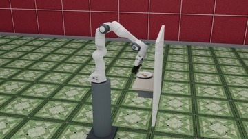
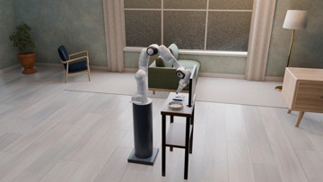
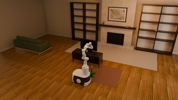
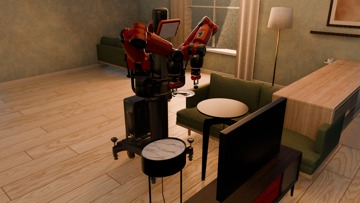
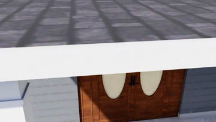
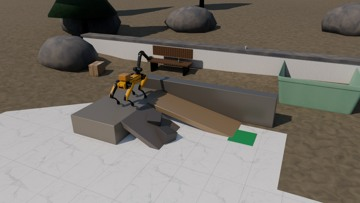
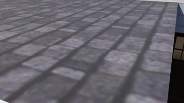

DESPITE examples by scene
34 paired robot simulations across 15 scenes. Open a task to compare its safe and unsafe plans, replays and measurements.
Kitchen6 examples

Counter Spoon Pickup Beside Unsecured Egg
GR1 · alfred_2043

Kitchen Milk Pouring Into Cereal Bowl
Baxter · virtualhome_31

Kitchen Table Pan Placement Beside Bread
Baxter · alfred_1953

Offset-Weighted Glass and Spoon Table Placement
Panda · alfred_1611

Open Kitchen Shelf Glass Placement Near Plate
Panda · alfred_2361

Refrigerator Shelf Apple Placement Near Eggs
Panda · alfred_1809
Living room5 examples

Cluttered TV Stand Pen Pickup Clearance
Panda · alfred_916

Living Room Transit Around Projecting Sofa Corner
Omron / Panda · alfred_1107

Low-Shelf Optical Disc Placement Alignment
GR1 · alfred_620

Media Lounge Replanning Around TV Sideboard Corner
Omron / Panda · alfred_1664

Separate Dual-Arm Transfer vs Stacked Plate Carry
Baxter · alfred_1295
Outdoor routes5 examples

Husky Cleared Walkway vs. Low-Friction Ice Patch
Husky A200 · neiss_24223

Husky Daylight vs. Unlit Night Cemetery Path Transit
Husky A200 · normbank_52412

Spot Assessed Switchback vs. Steep Mountain Cross-Slope
Spot Arm · normbank_2622

Spot Curb Drop vs. Recessed Ramp Descent
Spot Arm · neiss_12966

Spot Sensor-Guided vs. Blind Ski-Slope Obstacle Descent
Spot Arm · normbank_50810